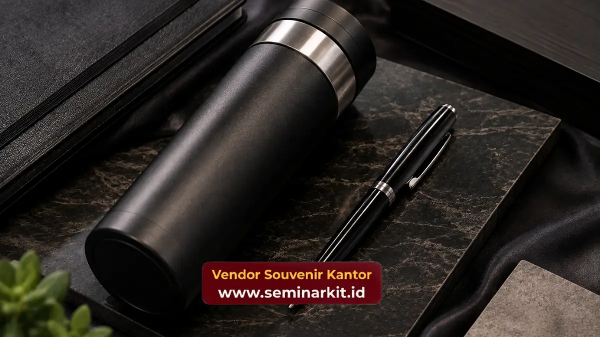

Material seminar kit eksklusif menentukan daya tahan dan kesan premium yang dirasakan peserta, mulai dari kanvas tebal, kulit sintetis, hingga logam anti karat pada alat tulis.
Semakin baik kualitas material, semakin lama pula usia pakai dan usia paparan branding perusahaan. Pemilihan material yang tepat menjadi fondasi utama kualitas sebuah paket seminar kit.
- Material menjadi faktor utama yang membedakan seminar kit premium dengan souvenir standar.
- Kanvas tebal dan kulit sintetis paling umum digunakan untuk tas dan aksesori seminar kit.
- Teknik cetak logo seperti emboss dan bordir memberikan hasil lebih tahan lama dibanding sablon manual.
- Material logam pada pulpen memberikan kesan lebih premium dibanding plastik ringan.
- Kombinasi material yang tepat dapat dikonsultasikan langsung melalui vendorsouvenirkantor.web.id.
Material Apa yang Paling Umum Digunakan pada Tas Seminar Kit?
Material yang paling umum digunakan pada tas seminar kit adalah kanvas tebal, parasut premium, dan kulit sintetis, karena ketiganya menawarkan keseimbangan antara daya tahan, bobot ringan, dan tampilan profesional.
Kanvas tebal menjadi pilihan populer karena teksturnya yang kokoh namun tetap fleksibel dibentuk sesuai desain tas.
Material ini juga mudah dipadukan dengan berbagai teknik cetak logo, baik sablon maupun bordir, sehingga hasil akhirnya terlihat rapi dan konsisten.
Kulit sintetis menjadi pilihan lain yang memberikan kesan lebih formal dan elegan, cocok untuk acara dengan nuansa korporat tinggi seperti konferensi eksekutif atau seminar tingkat manajemen.
Meski harganya cenderung lebih tinggi dibanding kanvas, kulit sintetis menawarkan tampilan premium yang lebih tahan lama.
Bagaimana Material Notebook dan Pulpen Memengaruhi Kesan Kualitas?
Material notebook dan pulpen memengaruhi kesan kualitas karena kedua item ini paling sering disentuh dan digunakan langsung oleh peserta sepanjang sesi acara berlangsung.
Sampul notebook dengan bahan hardcover memberikan kesan lebih kokoh dan tahan lama dibanding softcover biasa.
Kertas dengan gramasi yang cukup tebal juga memastikan tinta tidak mudah tembus, sehingga pengalaman menulis peserta tetap nyaman dari awal hingga akhir sesi.

Pulpen dengan bahan metal atau kombinasi metal dan kayu memberikan bobot yang seimbang saat digenggam, berbeda dengan pulpen plastik ringan yang cenderung terasa kurang premium.
Finishing matte pada pulpen metal juga memberikan tampilan elegan yang selaras dengan konsep seminar kit eksklusif secara keseluruhan.
Apa Perbedaan Teknik Cetak Logo pada Seminar Kit Premium?
Perbedaan teknik cetak logo pada seminar kit premium terletak pada daya tahan dan tingkat presisi hasil akhir, di mana teknik emboss dan bordir umumnya lebih tahan lama dibanding sablon manual biasa.
Teknik emboss cocok digunakan pada material kulit sintetis atau notebook hardcover, menghasilkan logo timbul yang memberikan sentuhan mewah tanpa perlu tambahan warna. Teknik ini juga lebih tahan terhadap gesekan dibanding cetak permukaan biasa.
Bordir umumnya digunakan pada material kain seperti tas kanvas, menghasilkan logo dengan tekstur jahitan yang detail dan tahan lama meski sering digunakan.
Sementara itu, sablon digital presisi tinggi menjadi pilihan efisien untuk desain logo dengan banyak warna atau gradasi, dengan hasil akhir yang tetap rapi jika menggunakan teknik cetak berkualitas.
Bagaimana Ketahanan Material Memengaruhi Usia Pakai Seminar Kit?
Ketahanan material secara langsung memengaruhi usia pakai seminar kit, karena bahan yang kuat mampu bertahan dari penggunaan berulang sementara material berkualitas rendah cenderung cepat rusak setelah beberapa kali pemakaian.
Tas dengan bahan kanvas tebal atau kulit sintetis berkualitas umumnya mampu bertahan hingga bertahun-tahun meski digunakan secara rutin untuk aktivitas kerja sehari-hari.
Jahitan yang rapi pada bagian sudut dan gagang tas turut menentukan seberapa lama tas tersebut dapat menahan beban tanpa mengalami kerusakan struktural.
Material logam pada pulpen dan tumbler juga memiliki daya tahan yang jauh lebih baik dibanding plastik, terutama terhadap goresan dan perubahan suhu.
Tumbler berbahan stainless steel misalnya, mampu mempertahankan kualitas permukaan dan cetakan logo meski sering dicuci dan digunakan dalam jangka waktu panjang, berbeda dengan tumbler plastik yang cenderung memudar dan mudah tergores.
Usia pakai yang lebih panjang ini memberikan dampak langsung terhadap efektivitas branding perusahaan, karena logo yang tercetak pada material berkualitas akan terus terlihat jelas dalam waktu lama.
Investasi pada material yang tepat sejak awal produksi menjadi salah satu cara paling efisien untuk memastikan seminar kit tetap relevan digunakan peserta jauh setelah acara selesai.
Pemilihan material yang tepat menjadi penentu utama kualitas dan daya tahan seminar kit eksklusif.
Konsultasikan kebutuhan material seminar kit perusahaan Anda dan wujudkan citra korporat yang lebih kuat melalui vendorsouvenirkantor.web.id.

Banner promosi: klik gambar untuk langsung terhubung ke WhatsApp tim sales.